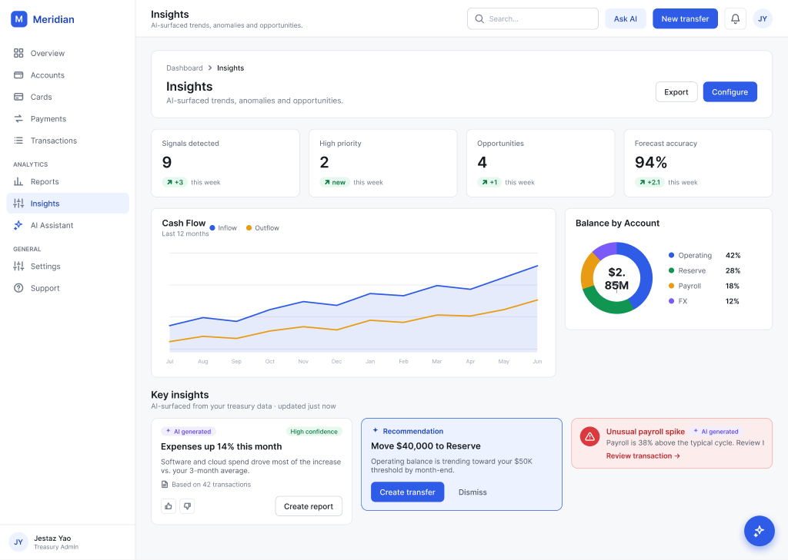
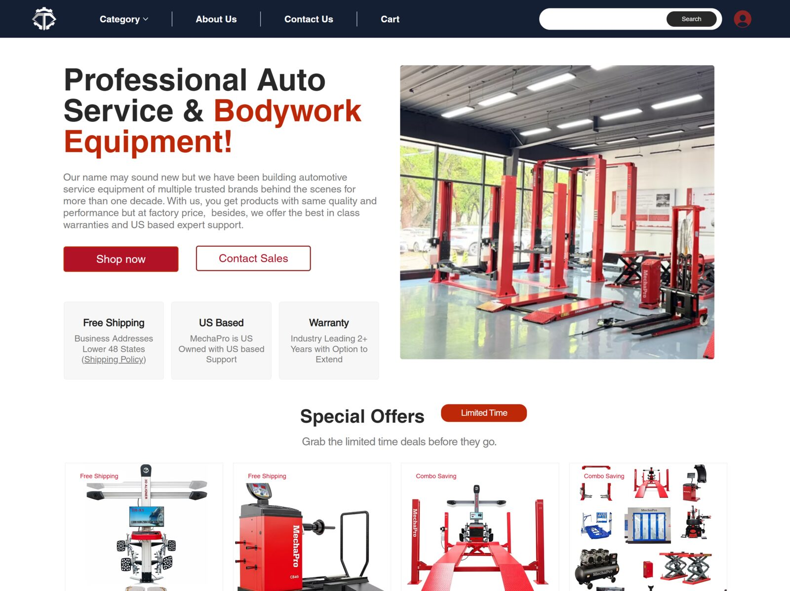

I design the decisions AI products make — not just the screens.
Product designer focused on the line where AI meets real consequences. What the model is allowed to decide. What has to be a rule. How the system shows its work. Currently shipping case studies on multi-agent systems, retrieval memory, and LLM policy architecture.
Seven case studies about the hardest part of AI design — deciding what the model doesn't decide.
All seven started from the same observation: LLM products fail in predictable ways. These are the design responses when you take that seriously — shipped, working code, not mockups.
Meridian · an enterprise design system, end to end.
A 3-tier tokenized design system — 288 variables and 179 governed components, authored in Figma and published as a React library that a working banking dashboard actually consumes. Figma and code are linked with Code Connect, so one design change resolves to the same token in both — and a single mode switch re-themes the entire product, Light to Dark.
MystNight · the AI that hosts a murder mystery.
Two players, one link. An AI generates a locked hidden case, plays every lying suspect, paces the clues across 5–8 acts, then adjudicates the accusation — live, so it never plays the same way twice. Built and shipped solo as a real product: bilingual, voiced, Stripe-monetized.
Bitez · the on-device AI that picks one.
You're hungry. You open Bitez. It picks one place — not fifty — and explains why in a sentence you'd want to hear from a friend. Apple's on-device AI does the language part: reading what you typed, writing the explanation. The actual reasoning behind the pick is laid out on screen — every fact sourced, never a black box. Now live on the App Store.
Demon Rising · The Council.
A browser-based narrative game where 5 council advisors react to the player's choices in natural language. The LLM classifies player intent into 5 channels, generates contextual responses, and the game state stays consistent. Latency budget ≤ 8s, 0 dead-ends, designed fallbacks for every failure mode.
Director · Supply Chain MAS.
A multi-agent system that turns 180,519 raw orders into a one-paragraph answer — by routing through four specialised sub-agents, surfacing the raw rows behind every claim, and benchmarking three router strategies against each other. Built for legibility, not for autonomy.
Visual RAG · Memory Map.
A 2D coordinate-space view of an LLM's long-term memory — 42 chunked cards across 6 semantic clusters, projected with UMAP. The query lights up the cluster it lands in, draws rays to top-K retrieved chunks, and shows the match percentages live. Makes retrieval legible — not magic.
The Translator Pattern.
A design pattern for AI-policy systems: LLM translates, code decides. The model converts natural language into a typed, structured plan. Code runs a deterministic validator with 4 gates — schema, range, policy, sandbox. Tested with 6 adversarial prompts: 6/6 blocked, 0 hallucinated approvals.
Selected & client work — five years.
The unglamorous, load-bearing parts of products — information architecture, data-heavy dashboards, permission-gated flows, and AI-augmented client work.

A 3-tier tokenized design system — 179 Figma components published as a React library and consumed by a working banking dashboard, with Figma↔code linked via Code Connect.
A live web product where an AI hosts a murder mystery for two players — generating a locked case, playing autonomous lying suspects, and grading the accusation. Next.js · Supabase · LLM · TTS · Stripe.

A heavy-equipment e-commerce site where a single decision can be $20K. Designed the IA, configurator, trust modules and buyer flows — first 30 days: $38K+ revenue, $9.7K AOV.
A multi-program NYC learning center site with Shirely — an AI assistant that classifies parent intent, holds boundaries on pricing & promises, and routes to branch staff. ~12% conversion (4× industry avg).

An AI accessibility scanner that explains WCAG violations in plain English and proposes design-level fixes — not just color-contrast tickets.
A mobile app for strangers meeting IRL. Designed around the question: how does a social product create trust between people who haven't met yet?
I design the parts of AI products where the decisions are actually hard.
Five years in product design — moving from B2B SaaS and accessibility tooling to AI-augmented client work (SAGE, MechaPro, A11y Copilot) to multi-agent systems and retrieval architecture (Director, RAG, Translator Pattern). The thread: I'm most useful where the design problem isn't "make this screen prettier" but "decide what the model gets to decide, and what stays a rule."
Born in Beijing, based in NYC. Senior product designer, comfortable in code (TS, Python, swift to wire prototypes), and the person on the team who'll argue for the fallback flow before the happy path.
Design the failure mode first.
What happens when the model is wrong? What does the user see? Where does the system route to next? I draw the unhappy path before the happy one.
LLM translates. Code decides.
I treat the model as a translator from messy human inputs to typed structured data. The structured data goes through deterministic gates. The model isn't allowed to be the final authority on anything irreversible.
Show the work, not just the answer.
Confidence scores, citations to source rows, retrieval rays, traces. Users trust systems that let them check the work — and design has to make the checking cheap.
Care more about the boring half.
Empty states, error states, permissions, ops dashboards, trust modules. The half that doesn't ship to the demo reel is the half that actually keeps users.
Building something where the design decisions are actually hard?
AI products, multi-agent systems, retrieval, complex B2B flows — that's the work I want. Drop a note and tell me what you're building.